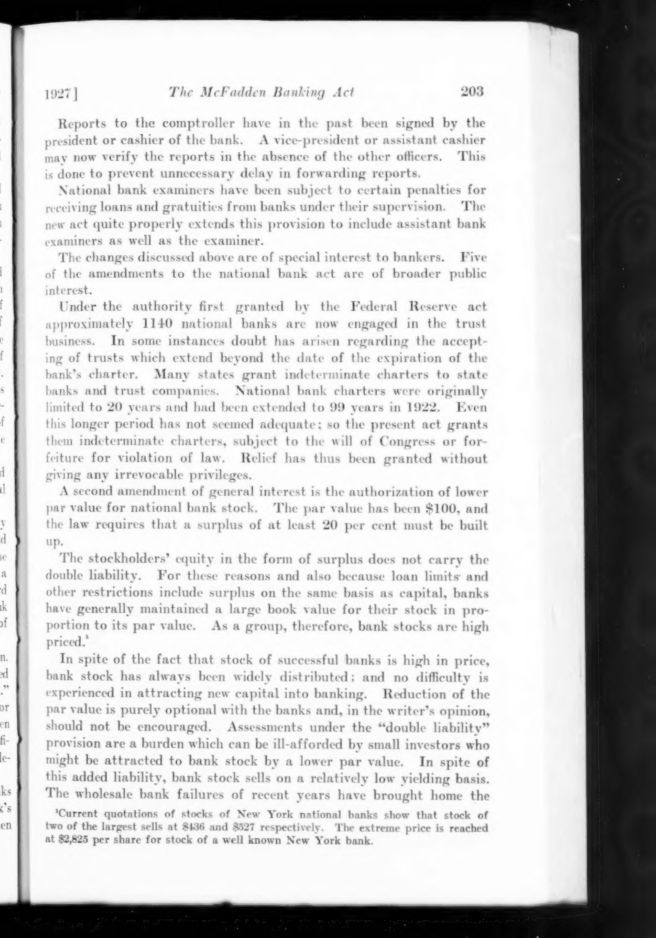

A lei McFadden, a renda da terra e o ciclo de 1919 a 1925
Leitura: 10 min
Preston analisa a lei bancária McFadden; Hayes defende que a renda da terra entra no preço; Anderson mede quem puxa o ciclo de 1919–1925; Fisher pergunta quem compra as ações dos empregados.


Em 25 de fevereiro de 1927, o presidente Coolidge sancionou a lei que todos chamavam de McFadden Banking Act. O projeto tinha nascido de consultas do controlador da moeda, Henry M. Dawes, a examinadores, banqueiros e advogados, fora apresentado à Câmara em 11 de fevereiro de 1924 e atravessara quatro sessões do Congresso antes de virar lei. H. H. Preston, da University of Washington, abre o número de junho de 1927 da American Economic Review com a primeira análise de conjunto da nova lei, quatro meses depois da sanção.
O número é o segundo do volume XVII. Depois de Preston vêm dois artigos de teoria e de estatística: H. Gordon Hayes, da Ohio State University, reabre a velha disputa sobre se a renda da terra entra no preço das mercadorias; Montgomery D. Anderson, da Washington University, mede com dezenas de coeficientes de correlação a ordem em que se movem renda agrícola, produção, comércio, preços e crédito entre 1919 e 1925. Uma comunicação curta de Willard C. Fisher, da New York University, pergunta quem, dentro das empresas, compra as ações oferecidas aos empregados. O resto do número traz resenhas e títulos de livros novos, resumos de periódicos, documentos oficiais, com um resumo das recomendações da Comissão Real canadense sobre as Províncias Marítimas, e notas da profissão.
O que mudou para os bancos com a lei McFadden?
H. H. Preston (University of Washington) · “The McFadden Banking Act” · pp. 201–218
Preston divide a lei em três partes: emendas à lei dos bancos nacionais, regras para agências e renovação das cartas dos bancos do Federal Reserve. As emendas somam dezesseis dispositivos. A maioria apenas legaliza a prática: fusão direta entre bancos estaduais e nacionais, cofres de aluguel em sociedade separada, dividendos em ações, o cargo de presidente do conselho. Cinco têm alcance maior: carta por prazo indeterminado para os bancos nacionais, valor nominal menor das ações, autorização expressa para negociar títulos de investimento, crédito imobiliário urbano por cinco anos e novos limites de empréstimo a um só tomador.
O autor discorda de uma delas. A redução do valor nominal, escreve, não deveria ser estimulada, porque a dupla responsabilidade dos acionistas pesa sobre pequenos investidores: dos 629 bancos nacionais liquidados desde 1865, só 48,87% das chamadas de capital foram efetivamente recebidas. Já a permissão para aplicar até metade dos depósitos de poupança em hipotecas é tratada como passo à frente.
A disputa que atrasou a lei foi a das agências. Bancos nacionais passam a poder abrir agências dentro da própria cidade, só onde a lei estadual dá o mesmo direito aos bancos estaduais e com limites por população; agências fora da cidade ficam proibidas para todos os membros do sistema. Preston narra a briga das emendas Hull, que tentavam congelar o mapa estadual da época, e registra que o Bank of Italy, com 276 agências na Califórnia, se tornou nacional em 1º de março de 1927. A renovação das cartas do Federal Reserve, que expirariam em 1934, passou na Câmara por 298 votos a 22.
A renda da terra entra no preço do trigo?
H. Gordon Hayes (Ohio State University) · “Land Rent and the Prices of Commodities” · pp. 219–229
Hayes parte da frase de Ricardo segundo a qual o trigo não é caro porque se paga renda; paga-se renda porque o trigo é caro. Jevons tinha contestado a tese, e Patten, Hobson, Johnson, Davenport, Taylor e Cassel seguiram na mesma linha. O motivo do artigo é que Fairchild, Furniss e Buck a defendem num manual de 1926 de ampla adoção, o que lhe daria nova sobrevida.
A tese de Hayes é que, sempre que a terra tem usos alternativos, a renda que ela renderia num uso é custo para o outro. Se um pasto rende um dólar por acre com gado, a lã e o carneiro precisam pagar pelo menos isso para que a terra vá para as ovelhas. O raciocínio é o mesmo dos salários: o que um marceneiro ganha fazendo cadeiras limita a oferta de mesas. O comerciante que diz cobrar sete dólares por um chapéu por causa do aluguel, conclui o autor, não está errado.
A parte empírica usa o Agricultural Year Book de 1925. Entre 1923 e 1924, a área de trigo caiu mais de sete milhões de acres e a de milho mais de três milhões, enquanto feno, aveia e algodão ganharam mais de sete milhões e meio. Para Hayes, a mudança veio da troca de culturas na mesma terra, e não do abandono de terras marginais sem renda. Uma tabela do milho de 1909 a 1924 mostra o rendimento “pleno” por acre quase constante, com variação média de 1,3 bushel por ano, o que indicaria que os agricultores não ajustam a intensidade do cultivo ao preço.
“A margem de transferência é, assim, o Hamlet na peça das forças que formam os preços.” (The margin of transference is thus the Hamlet in the play of the price-making forces.)
A conclusão é que as margens extensiva e intensiva, sem renda, são personagens menores; a renda prevalecente pesa nas escolhas entre usos e, por isso, é causa no preço das mercadorias.
O que puxa o ciclo: a fazenda, a fábrica ou o banco?
Montgomery D. Anderson (Washington University) · “Economics of Business Fluctuation in the United States, 1919–1925” · pp. 230–271
Anderson testa, com índices mensais de 1919 a 1925 e correlações com defasagens de dois em dois meses, as explicações mais comuns do ciclo. A primeira é a do poder de compra insuficiente: a indústria não pagaria aos consumidores o bastante para comprar o que produz. O poder de compra dos operários fabris acompanha a produção industrial, com correlação máxima de 0,735 com dois meses de atraso, mas quase não se correlaciona com as vendas das lojas de departamentos do segundo distrito do Federal Reserve, região sobretudo industrial: o máximo é 0,27. Daí o autor conclui que esse poder de compra não freia a demanda.
O poder de compra agrícola é outra história. Ele se correlaciona em 0,71 com as vendas das casas de venda por catálogo, dois meses depois, e parece governar a fabricação de bens de consumo, que por sua vez governa o comércio atacadista e o volume total de manufaturas. Os estoques do varejo sobem quando os dos fabricantes caem: a correlação é de –0,54.
O mesmo vale para o crédito, segundo o autor: os redescontos seguem os empréstimos comerciais, a taxa de redesconto segue a taxa de mercado com correlação de 0,97 e quatro meses de atraso, e as falências seguem o comércio. A estabilidade de preços de 1923 a 1925 não teria reduzido as oscilações da produção, e conviveu com um índice de especulação que chegou a 4,22 desvios-padrão em outubro de 1925. A peça final é a integral do poder de compra agrícola, que antecipa em oito meses a taxa de juros com correlação de 0,91 e desenha um ciclo de oito anos.
Quem compra as ações vendidas aos empregados?
Willard C. Fisher (New York University) · “Distribution of Employee Stock Ownership” · pp. 272–273
Fisher observa que, nos planos de venda de ações a empregados, “empregado” inclui do servente ao presidente, e as empresas não informam quem compra. Em 23 de março de 1927 ele escreveu a trinta companhias; até 19 de abril, só uma respondera de forma razoavelmente completa e catorze não tinham respondido. Entre os dados esparsos que, segundo ele, dariam uma resposta indesejada está uma ferrovia em que 19% dos diretores e empregados do escritório central subscreveram ações, contra 1,5% na manutenção da via.
O que mais há na edição?
As resenhas começam com o manual de produção de John D. Black, resenhado por John Ise, e incluem a Theorie der wirtschaftlichen Entwicklung de Schumpeter, resenhada por Oskar Morgenstern, a história do madeiramento da Marinha britânica de Albion, duas resenhas da série Wheat Studies, Machinery and Labor de George E. Barnett, resenhado por Harry Jerome, a Biology of Population Growth de Raymond Pearl, resenhada por A. B. Wolfe, e Co-operative Democracy de Warbasse. Os resumos de periódicos ocupam as pp. 358–394. Em Documents, J. F. Davison resume as recomendações da Comissão Real canadense sobre as Províncias Marítimas, entre elas um aumento provisório de US$ 875.000 na subvenção federal anual à Nova Escócia. As notas trazem a comissão de indicações da American Economic Association, presidida por John R. Commons, o volume de ensaios em homenagem aos oitenta anos de John Bates Clark e a ida de Allyn A. Young, de Harvard, para a Universidade de Londres, na sucessão de Edwin Cannan.
Na minha leitura
Na minha leitura, o número junta três maneiras de fazer economia aplicada. Preston faz análise institucional: lê a lei artigo por artigo e pesa cada regra contra a prática bancária e a competição entre os sistemas estadual e nacional. Hayes faz teoria com um teste empírico simples, usando estatísticas agrícolas para decidir onde está a margem que forma o preço. Anderson faz o que ainda era novo, uma bateria de correlações com defasagens para ordenar no tempo as variáveis do ciclo.
O fio comum é a pergunta sobre causalidade. Hayes inverte a direção que o manual atribuía entre renda e preço; Anderson usa a precedência temporal como critério de causa e conclui que preços, crédito e juros seguem a produção. O próprio Anderson adverte que correlação com defasagem não prova causa por si só; o artigo ilustra tanto a força quanto o limite de usar a ordem no tempo para responder a uma pergunta de política monetária.
Glossário
- Banco nacional
- banco com carta federal, supervisionado pelo controlador da moeda; o banco estadual recebe carta do estado.
- Dupla responsabilidade
- regra pela qual o acionista de banco podia ser chamado a pagar, em caso de falência, até o valor nominal de suas ações.
- Agência intra-urbana
- agência aberta na mesma cidade da sede do banco.
- Renda da terra
- pagamento pelo uso da terra, distinto do aluguel de construções e benfeitorias.
- Margem de transferência
- na expressão de Hayes, o ponto em que um produtor ou uma terra passa de uma produção para outra quando os preços relativos mudam.
- Coeficiente de correlação
- medida, de –1 a 1, de quanto duas séries variam juntas.
- Defasagem
- intervalo de tempo com que uma série é comparada com outra.
- Taxa de redesconto
- juro cobrado pelos bancos do Federal Reserve ao descontar títulos apresentados pelos bancos membros.
Artigos (3)
- The McFadden Banking Act — H. H. Preston (University of Washington) (pp. 201–218) · resenha acima · comentário completo
- Land Rent and the Prices of Commodities — H. Gordon Hayes (Ohio State University) (pp. 219–229) · resenha acima · comentário completo
- Economics of Business Fluctuation in the United States, 1919–1925 — Montgomery D. Anderson (Washington University) (pp. 230–271) · resenha acima · comentário completo
Resenhas (41)
- John D. Black, Introduction to Production Economics — J. Ise (University of Kansas) (p. 274). Resenha do manual de economia da produção usado na Universidade de Minnesota.
- Frederick Soddy, Wealth, Virtual Wealth and Debt — A. G. Silverman (p. 275). Resenha do livro de Soddy sobre riqueza, riqueza virtual e dívida.
- Bouniatian, La Loi de Variation de la Valeur et les Mouvements Généraux des Prix — C. M. Walsh (p. 278). Resenha do livro de Bouniatian sobre a variação do valor e os movimentos gerais dos preços.
- Joseph Schumpeter, Theorie der wirtschaftlichen Entwicklung — O. Morgenstern (p. 281). Resenha da edição de 1926 da teoria do desenvolvimento econômico de Schumpeter.
- Loria, Economia Politica — R. R. W. (p. 283). Nota breve sobre o tratado de Loria.
- Patton, Diminishing Returns in Agriculture — A. J. Dadisman (p. 284). Nota sobre o estudo de Patton a respeito dos rendimentos decrescentes na agricultura.
- Robert G. Albion, Forests and Sea Power: The Timber Problem of the Royal Navy, 1652–1862 — H. L. Gray (Bryn Mawr College) (p. 286). Resenha do estudo sobre o suprimento de madeira da Marinha britânica.
- George M. Calhoun, The Business Life of Ancient Athens — C. C. Plehn (p. 288). Resenha do livro sobre a vida de negócios em Atenas antiga.
- Daniels, George Unwin: A Memorial Lecture — A. P. Usher (p. 290). Nota sobre a conferência em memória do historiador George Unwin.
- Heckscher, Bidrag till Sveriges Ekonomiska och Sociala Historia under och efter Världskriget — R. S. Saby (p. 291). Nota sobre a obra de Heckscher a respeito da história econômica e social da Suécia durante e depois da guerra.
- Mendelsohn, Saturated Civilization — O. Ingraham (p. 293). Nota breve sobre o livro de Mendelsohn.
- Uyehara, Industry and Trade of Japan — A. P. U. (p. 294). Nota breve sobre o livro a respeito da indústria e do comércio do Japão.
- Official Publications of European Governments — L. S. Turnbull (p. 295). Nota sobre o guia de publicações oficiais de governos europeus.
- Lynn Ramsay Edminster, The Cattle Industry and the Tariff — R. A. Clemen (Armour's Livestock Bureau, Chicago) (p. 297). Resenha do estudo sobre a pecuária bovina e a tarifa.
- Wheat Studies — H. B. Price (p. 301). Nota sobre a série Wheat Studies.
- Wheat Studies — R. M. Green (p. 302). Segunda nota sobre a série Wheat Studies.
- W. T. Jackman, Economics of Transportation — E. J. Rich (p. 304). Resenha do manual de economia dos transportes de Jackman.
- Remer, The Foreign Trade of China — Frederic E. Lee (p. 308). Resenha do estudo de Remer sobre o comércio exterior da China.
- Leland H. Jenks, The Migration of British Capital to 1875; A. Emil Davies, Investments Abroad — George W. Edwards (Institute of International Finance, New York City) (p. 310). Resenha conjunta de dois livros sobre investimento no exterior.
- Prosper Reiter, Jr., Profits, Dividends and the Law — J. P. Adams (p. 311). Resenha do livro sobre lucros, dividendos e o direito, entre a contabilidade e a lei.
- Horace Secrist, The Widening Retail Market — N. J. Silberling (University of California) (p. 314). Resenha do estudo de Secrist sobre o mercado varejista.
- Arthur S. Dewing, The Financial Policy of Corporations — F. E. Armstrong (p. 316). Resenha da edição revista do tratado de Dewing sobre finanças das empresas.
- Artman, Food Costs and City Consumers — F. E. Clark (p. 317). Resenha do estudo sobre o custo dos alimentos para o consumidor urbano.
- Ettinger e Golieb, Credits and Collections — M. J. S. (p. 320). Nota breve sobre o livro de crédito e cobrança.
- McCarty e Amidon, Survey Course in Accounting — J. P. Adams (p. 321). Nota breve sobre o curso de contabilidade.
- Thorp e Mitchell, Business Annals — W. F. Mitchell (p. 324). Nota sobre os Business Annals de Thorp e Mitchell.
- Smith e Dowling, Cases on the Law of Public Utilities — C. S. Morgan (p. 327). Nota sobre a coletânea de casos de direito dos serviços públicos.
- Sam A. Lewisohn, The New Leadership in Industry — Ordway Tead (New York School of Social Work) (p. 327). Resenha do livro de Lewisohn sobre a nova liderança na indústria.
- George E. Barnett, Machinery and Labor — H. Jerome (p. 329). Resenha do estudo de Barnett sobre máquinas e trabalho.
- Catlin, The Labor Problem in the U. S. and Great Britain — G. E. Barnett (p. 330). Resenha do livro de Catlin sobre a questão operária.
- Bryce M. Stewart, Canadian Labor Laws and the Treaty — J. W. MacMillan (p. 332). Resenha do estudo sobre as leis trabalhistas canadenses e o Tratado.
- Nora Milnes, The Economics of Wages and Labour — P. Brissenden (Columbia University) (p. 333). Resenha do livro de Nora Milnes sobre salários e trabalho.
- Commons e Andrews, Principles of Labor Legislation — G. E. Barnett (p. 336). Nota sobre o livro de Commons e Andrews a respeito dos princípios de legislação trabalhista.
- Lauck, Political and Industrial Democracy, 1776–1926 — E. Berman (p. 337). Nota sobre o livro de Lauck.
- Saposs, Left Wing Unionism — J. E. LeRossignol (p. 338). Nota sobre o estudo de Saposs a respeito do sindicalismo de esquerda.
- New York Stock Exchange, Report of Personnel Department — B. R. Andrews (p. 339). Nota sobre o relatório do departamento de pessoal da Bolsa de Nova York.
- Bonnet, Les Expériences Monétaires Contemporaines — R. R. W. (p. 340). Nota sobre o livro de Bonnet a respeito das experiências monetárias contemporâneas.
- Raymond Pearl, The Biology of Population Growth — A. B. Wolfe (p. 347). Resenha do livro de Pearl sobre a biologia do crescimento populacional.
- Regierungs-Entwurf eines Gesetzes über Arbeitslosenversicherung nebst amtlicher Begründung — F. E. Wolfe (p. 353). Nota sobre um projeto governamental de lei de seguro-desemprego, com a justificativa oficial.
- Cassau, The Consumers' Co-operative Movement in Germany — J. G. Brooks (p. 354). Resenha do livro sobre o cooperativismo de consumo na Alemanha.
- Warbasse, Co-operative Democracy through Voluntary Association of the People as Consumers — J. E. LeRossignol (p. 355). Resenha do livro de Warbasse sobre a democracia cooperativa.
Novos livros (15)
- New Books (p. 282). Lista de livros novos sobre obras gerais, teoria e sua história.
- New Books (p. 289). Lista de livros novos sobre história econômica e geografia.
- New Books (p. 298). Lista de livros novos sobre agricultura, mineração, florestas e pesca.
- New Books (p. 303). Lista de livros novos sobre indústrias de transformação.
- New Books (p. 306). Lista de livros novos sobre transportes e comunicações.
- New Books (p. 308). Lista de livros novos sobre comércio e crises comerciais.
- New Books (p. 317). Lista de livros novos sobre contabilidade, métodos de negócio, investimentos e bolsas.
- New Books (p. 326). Lista de livros novos sobre capital e organização capitalista.
- New Books (p. 336). Lista de livros novos sobre trabalho e sindicatos.
- New Books (p. 339). Lista de livros novos sobre moeda, preços, crédito e bancos.
- New Books (p. 343). Lista de livros novos sobre finanças públicas, tributação e tarifas.
- New Books (p. 350). Listas de livros novos sobre população e migração e sobre problemas sociais e reformas.
- New Books (p. 352). Lista de livros novos sobre seguros e pensões.
- New Books (p. 354). Listas de livros novos sobre pobreza e assistência e sobre socialismo e cooperativas.
- New Books (p. 356). Lista de livros novos sobre estatística.
Documentos, periódicos e notas (5)
- Distribution of Employee Stock Ownership — Willard C. Fisher (New York University) (pp. 272–273). Comunicação que pergunta que níveis de empregados compram as ações vendidas pelas empresas e relata as respostas de trinta companhias. · ler o comentário
- Periodicals (pp. 358–394). Resumos de artigos de periódicos por área.
- Documents, Reports, and Legislation: Report of the Royal Commission on Maritime Claims — J. F. Davison (University of Toronto) (p. 395). Resume as seis recomendações da comissão canadense para as Províncias Marítimas, entre elas aumentos provisórios da subvenção federal anual.
- Documents, Reports, and Legislation (pp. 395–400). Notas sobre boletins do Departamento de Comércio, relatórios estaduais de tributação e o relatório anual do Tesouro.
- Notes (pp. 401–408). Comissão de indicações da associação, volume em homenagem a John Bates Clark, novos membros e notícias da profissão.
Fontes
- The McFadden Banking Act (pp. 201–218). Internet Archive (número completo, PDF)
- Land Rent and the Prices of Commodities (pp. 219–229). Internet Archive (número completo, PDF)
- Economics of Business Fluctuation in the United States, 1919–1925 (pp. 230–271). Internet Archive (número completo, PDF)
- Distribution of Employee Stock Ownership: A Communication (pp. 272–273). Internet Archive (número completo, PDF)
- Review: Introduction to Production Economics, by John D. Black (p. 274). Internet Archive (número completo, PDF)
- Review: Wealth, Virtual Wealth and Debt, by Frederick Soddy (p. 275). Internet Archive (número completo, PDF)
- Review: La Loi de Variation de la Valeur et les Mouvements Généraux des Prix, by Bouniatian (p. 278). Internet Archive (número completo, PDF)
- Review: Theorie der wirtschaftlichen Entwicklung, by Joseph Schumpeter (p. 281). Internet Archive (número completo, PDF)
- New Books: General Works, Theory and Its History (p. 282). Internet Archive (número completo, PDF)
- Review: Economia Politica, by Loria (p. 283). Internet Archive (número completo, PDF)
- Review: Diminishing Returns in Agriculture, by Patton (p. 284). Internet Archive (número completo, PDF)
- Review: Forests and Sea Power: The Timber Problem of the Royal Navy, 1652–1862, by Robert G. Albion (p. 286). Internet Archive (número completo, PDF)
- Review: The Business Life of Ancient Athens, by George M. Calhoun (p. 288). Internet Archive (número completo, PDF)
- New Books: Economic History and Geography (p. 289). Internet Archive (número completo, PDF)
- Review: George Unwin: A Memorial Lecture, by Daniels (p. 290). Internet Archive (número completo, PDF)
- Review: Bidrag till Sveriges Ekonomiska och Sociala Historia under och efter Världskriget, by Heckscher (p. 291). Internet Archive (número completo, PDF)
- Review: Saturated Civilization, by Mendelsohn (p. 293). Internet Archive (número completo, PDF)
- Review: Industry and Trade of Japan, by Uyehara (p. 294). Internet Archive (número completo, PDF)
- Review: Official Publications of European Governments (p. 295). Internet Archive (número completo, PDF)
- Review: The Cattle Industry and the Tariff, by Lynn Ramsay Edminster (p. 297). Internet Archive (número completo, PDF)
- New Books: Agriculture, Mining, Forestry, and Fisheries (p. 298). Internet Archive (número completo, PDF)
- Review: Wheat Studies (p. 301). Internet Archive (número completo, PDF)
- Review: Wheat Studies (p. 302). Internet Archive (número completo, PDF)
- New Books: Manufacturing Industries (p. 303). Internet Archive (número completo, PDF)
- Review: Economics of Transportation, by W. T. Jackman (p. 304). Internet Archive (número completo, PDF)
- New Books: Transportation and Communication (p. 306). Internet Archive (número completo, PDF)
- Review: The Foreign Trade of China, by Remer (p. 308). Internet Archive (número completo, PDF)
- New Books: Trade, Commerce, and Commercial Crises (p. 308). Internet Archive (número completo, PDF)
- Review: The Migration of British Capital to 1875, by Leland H. Jenks; Investments Abroad, by A. Emil Davies (p. 310). Internet Archive (número completo, PDF)
- Review: Profits, Dividends and the Law, by Prosper Reiter, Jr. (p. 311). Internet Archive (número completo, PDF)
- Review: The Widening Retail Market, by Horace Secrist (p. 314). Internet Archive (número completo, PDF)
- Review: The Financial Policy of Corporations, by Arthur S. Dewing (p. 316). Internet Archive (número completo, PDF)
- Review: Food Costs and City Consumers, by Artman (p. 317). Internet Archive (número completo, PDF)
- New Books: Accounting, Business Methods, Investments, and the Exchanges (p. 317). Internet Archive (número completo, PDF)
- Review: Credits and Collections, by Ettinger and Golieb (p. 320). Internet Archive (número completo, PDF)
- Review: Survey Course in Accounting, by McCarty and Amidon (p. 321). Internet Archive (número completo, PDF)
- Review: Business Annals, by Thorp and Mitchell (p. 324). Internet Archive (número completo, PDF)
- New Books: Capital and Capitalistic Organization (p. 326). Internet Archive (número completo, PDF)
- Review: Cases on the Law of Public Utilities, by Smith and Dowling (p. 327). Internet Archive (número completo, PDF)
- Review: The New Leadership in Industry, by Sam A. Lewisohn (p. 327). Internet Archive (número completo, PDF)
- Review: Machinery and Labor, by George E. Barnett (p. 329). Internet Archive (número completo, PDF)
- Review: The Labor Problem in the U. S. and Great Britain, by Catlin (p. 330). Internet Archive (número completo, PDF)
- Review: Canadian Labor Laws and the Treaty, by Bryce M. Stewart (p. 332). Internet Archive (número completo, PDF)
- Review: The Economics of Wages and Labour, by Nora Milnes (p. 333). Internet Archive (número completo, PDF)
- Review: Principles of Labor Legislation, by Commons and Andrews (p. 336). Internet Archive (número completo, PDF)
- New Books: Labor and Labor Organizations (p. 336). Internet Archive (número completo, PDF)
- Review: Political and Industrial Democracy, 1776–1926, by Lauck (p. 337). Internet Archive (número completo, PDF)
- Review: Left Wing Unionism, by Saposs (p. 338). Internet Archive (número completo, PDF)
- Review: New York Stock Exchange, Report of Personnel Department (p. 339). Internet Archive (número completo, PDF)
- New Books: Money, Prices, Credit, and Banking (p. 339). Internet Archive (número completo, PDF)
- Review: Les Expériences Monétaires Contemporaines, by Bonnet (p. 340). Internet Archive (número completo, PDF)
- New Books: Public Finance, Taxation, and Tariff (p. 343). Internet Archive (número completo, PDF)
- Review: The Biology of Population Growth, by Raymond Pearl (p. 347). Internet Archive (número completo, PDF)
- New Books: Population and Migration; Social Problems and Reforms (p. 350). Internet Archive (número completo, PDF)
- New Books: Insurance and Pensions (p. 352). Internet Archive (número completo, PDF)
- Review: Regierungs-Entwurf eines Gesetzes über Arbeitslosenversicherung nebst amtlicher Begründung (p. 353). Internet Archive (número completo, PDF)
- Review: The Consumers' Co-operative Movement in Germany, by Cassau (p. 354). Internet Archive (número completo, PDF)
- New Books: Pauperism, Charities, and Relief Measures; Socialism and Co-operative Enterprises (p. 354). Internet Archive (número completo, PDF)
- Review: Co-operative Democracy through Voluntary Association of the People as Consumers, by Warbasse (p. 355). Internet Archive (número completo, PDF)
- New Books: Statistics and Its Methods (p. 356). Internet Archive (número completo, PDF)
- Periodicals (pp. 358–394). Internet Archive (número completo, PDF)
- Documents, Reports, and Legislation: Report of the Royal Commission on Maritime Claims (p. 395). Internet Archive (número completo, PDF)
- Documents, Reports, and Legislation (pp. 395–400). Internet Archive (número completo, PDF)
- Notes (pp. 401–408). Internet Archive (número completo, PDF)
- Número completo digitalizado (domínio público): Internet Archive.
Documento em domínio público (EUA, publicado antes de 1931), via JSTOR Early Journal Content e Internet Archive. Resumo e comentário do autor deste site, sem afiliação com a American Economic Association. Encontrou um erro? Escreva: a correção é publicada no próprio texto, com data.
← Nº 202 · St. Louis, 1926: juros, sociedades anônimas e o ônibus Nº 204 · Hawley e o empresário, Winston e o dólar, a fome de sal no Equador →